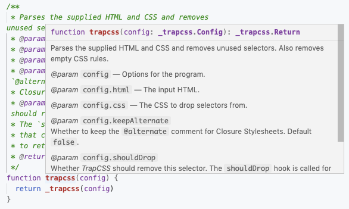
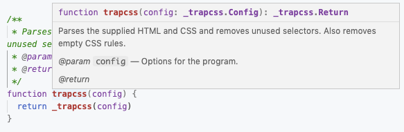

###! Templates
The entry point for the compiler is *src/depack.js*, which imports the method from the source code and exports it via CommonJS standard. It also imports externs so that _Closure_ will understand our types:
This file also includes the APGL license that was selected when the package was bootstrapped. It uses the ``/*!`` notation to preserve the comment. If you chose MIT license, you'll also have a similar, but shorter notice. For other licenses, you'd have to add a comment manually. Also, for _AGPL_, we don't include the copyright on top of each file as I believe it's redundant, but feel free to do it your way.
The entry to _Depack_ imports our API, and assigns it to the `modules.export` object. This will allow to access those methods (currently, just 1) from the *compile* dir. However, because we ran the _ÀLaMode_ transpiler on the *src* folder, the `module.exports =` got renamed into `export default`, therefore just manually change it back now.
We'll need to create a second file, called ``template`` in *compile/template.js*:
The template file is not meant for execution, but provides a blueprint for generation of our `main` file (called main because of the main field in *package.json*). It has the `@methodType {_trapcss.trapcss}` annotation, that declares the type of the function, so that its JSDoc can be expanded. It also contains the `typal` marker at the bottom, so that we can embed our _Config_ and _Return_ types into the main file as well. To generate the real JavaScript file, we'll need to run the command, that will run `template` and `d1` scripts in series. The template command is the following: ``typal compile/template.js -T compile/index.js -t types/api.xml``:
- *compile/template.js*, is the path to the template file.
- *-T compile/index.js*, the path to the main file to be generated.
- *-t types/api.xml*, is the path to types that should be used. It could also point to the dir itself, however because we also included arguments.xml for our binary, that doesn't allow us to simply pass `types`.
The `d1` command expands the typal marker in the *index.js* produced from the template — ``typal compile/index.js types/index.js -u -t types/index.xml``:
- *compile/index.js types/index.js*, paths to files with ``typal`` markers that needs embedding typedefs.
- *-u*, tells _Typal_ to use namespaces rather than simple type names.
- *-t types/index.xml*, the location of types, can be skipped.
After the two commands are run, we'll have a production-ready entry file. Let's have a look at what is being produced as the `main`:
The entry file to our package contains an annotated function that wraps a method from the API. Since we decorated it with JSDoc, we'll be able to receive autocompletion hints on the config type when consuming the library from other packages. Our config is declared as a type at the bottom, but the `config` property of the function is also expanded into individual ``@param``s. This is to increase the visibility of the parameters, which will now appear on the function's description:

This allows people to read the full description of the argument, without having to go through each individual property when expanding the config. Without this feature, the description doesn't give the full picture:

All typedefs should be embedded into the main file, which acts as a repository for types. This will make sure that types are always available. Do you remember how we imported the config type from *types/index.js* in the previous part?
```js
/**
* @typedef {import('..').Config} _trapcss.Config
* @typedef {import('..').Return} _trapcss.Return
*/
```
This is because the main file is treated as the go-to place for types. Using templates allows to treat source code independent from the API specification, and plug in the implementation into JSDoc-annotated shells for code. It's kind of similar to TypeScript that provides `.d.ts` types, however in pure JavaScript. If you're exporting a class, you can also use the `@constructor` tag in the template, to generate a class shell.
```js
const { _Cl } = require('./depack')
/** @constructor {_ns.MyClass} */
class MyClass extends _Cl {}
```
The body of the class will then be generated, however there's no annotations for properties, only member methods. For example, ``@goa/router`` [uses](https://github.com/idiocc/goa-router/blob/master/compile/index.js) this method. [Another way](https://github.com/idiocc/koa/blob/b6a2ebed556006675a35c1dcf7ee28aacdc3271c/compile/index.js#L7) to template classes, is to include a typedef of a class in a file, and then use `typeof` operator when proxying the type:
```js
const { _Goa, _Context } = require('./koa')
/**
* An application constructor.
* @type {new (options?: ApplicationOptions) => Application)}
*/
const $Goa = _Goa
/**
* The default context constructor.
* @type {new () => Context}
*/
const $Context = _Context
module.exports = $Goa
module.exports.Context = $Context
```
This also works pretty well, however you won't be able to access JSDoc for static methods.
In short, we need to use templates to enrich our compiled code with JSDoc annotations, by providing simple shells that are documented with JSDoc comments. All typedefs are also included in the main JS file to be accessed by methods. They are also imported from the source code, either directly or via such files as *types/index.js* that hold methods' typedefs for development purposes, as the main file is the source of truth for types.